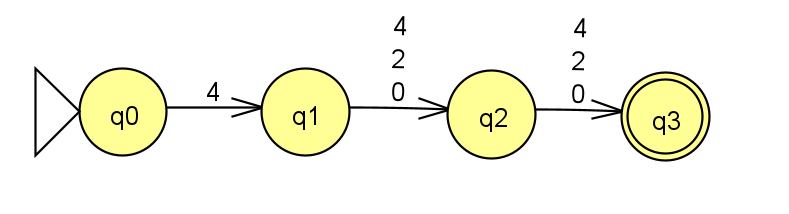

Homework 3
Last updated: Thu, 29 Feb 2024 12:41:45 -0500
Out: Wed Feb 21, 12:00pm EST Due: Mon Mar 04, 12:00pm EST (noon)
This assignment continues to explore nondeterministic finite automata (NFAs) and regular languages.
Homework Problems
Equivalent Machines (8 points)
"Closed" Operation Practice (9 points)
Formal Description of an NFA (9 points)
Recursively Processing a String (8 points)
README (1 point)
Total: 35 points
Submitting
Submit your solution to this assignment in Gradescope hw3. Please assign each page to the correct problem and make sure your solutions are legible.
A submission must also include a README containing the required information.
1 Equivalent Machines
Two machines are considered equivalent if they recognize the same language (i.e., they accept the same strings).
Come up with a function \textrm{convert} : \textsf{DFA} \rightarrow \textsf{NFA} where, given some input DFA M = (Q,\Sigma,\delta,q_{start},F) that satisfies the formal definition of DFAs from class, \textrm{convert}(M)= some NFA N that satisfies the formal definition of NFAs, and is equivalent to the input DFA.
To prove "equivalence" of two machines, use a variation of our language-machine "Equivalence Table", except now the columns correspond to the two machines.
In addition, since we are not dealing with specific languages or machines here, each line of the table needs an additional "justification" (can be mix of formalism and English prose).
String | M accepts? | N accepts? | Justification for why N accepts/rejects? |
Though your answer must work for any machine, you should use your answers for the specific machine qfrom Homework 1 DFA Formal Description and Homework 2 DFAs vs NFAs to help guide your thinking, and to double-check that your answer is correct.
2 "Closed" Operation Practice
Define:
\mathrm{NEG}(A) = \left\{w \mid w\textrm{ is not in the language }A\right\}
Prove that set of regular languages is closed under the \mathrm{NEG} operation by:
Giving the equivalent IF-THEN statement that must be proved.
Giving a proof of this IF-THEN statement.
The proof must be in the form of a Statements and Justifications Table.
If the proof needs a machine-language "Equivalence Table", the table must include two example strings, one in the language and one not in the language. Also, each line of the table needs a justification.
Finally, the proof must use the NFA representation of a regular language.
3 Formal Description of an NFA
Consider the following NFA: 
Come up with 3 strings that are accepted by the NFA.
Come up with 3 strings that are not accepted (rejected) by the NFA. Your answer must include as least one string which, when run as input to the machine, makes the machine end in an empty set of states, and one which makes the machine end in a non-empty set of states.
In class we learned that an NFA’s formal description has five components, e.g. N = (Q,\Sigma,\delta,q_{start},F), where \delta:Q\times\Sigma_\varepsilon\rightarrow\mathcal{P}(Q) is the transition function mapping a state and input symbol (or no symbol, in the case of an empty transition) to a set of states.
Come up with the formal description of the NFA above.
Using your examples, create a table to show that this machine is equivalent to the DFA from Homework 1 DFA Formal Description and the NFA from Homework 2 DFAs vs NFAs.
- Give some additional intuition (in English prose) for:
why all these machines are equivalent (hint: talk about what accepting computations look like in the machines), and
why NFAs may be "easier to work with" than DFAs
4 Recursively Processing a String
Assume some alphabet \Sigma.
Write a recursive function \textrm{double} : \Sigma^* \rightarrow \Sigma^* that repeats each character in a string (remember a string is a sequence of zero or more characters from \Sigma).
\textrm{double}(\texttt{a}) = \texttt{aa}
\textrm{double}(\texttt{ab}) = \texttt{aabb}
A base case that defines \textrm{double} when the input is the empty string,
and a recursive case that defines \textrm{double} when the input is a non-empty string. Recall that a non-empty string may be written as wa where a\in\Sigma and w\in\Sigma^*. The recursive case must also include a recursive call to \textrm{double} where the argument is smaller than the input argument.
Note: The "function" in this problem is a mathematical function. In other words, it maps every element of some set (called the domain), to an element in another (possibly same) set (called the range). This problem does not involve any code.